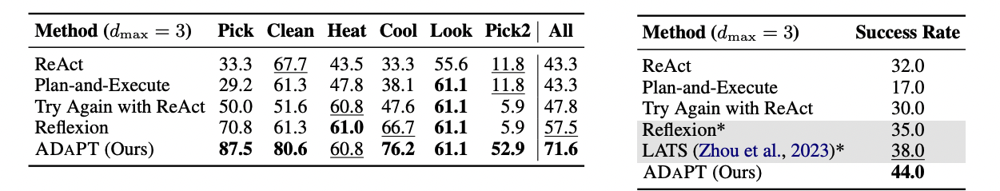
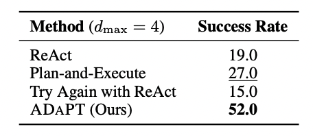

Abstract
Large Language Models (LLMs) are increasingly being used for interactive decision-making tasks requiring planning and adapting to the environment. Recent works employ LLMs-as-agents in broadly two ways: iteratively determining the next action (iterative executors) or generating plans and executing sub-tasks using LLMs (plan-and-execute). However, these methods struggle with task complexity, as the inability to execute any sub-task may lead to task failure. To address these shortcomings, we introduce As-Needed Decomposition and Planning for complex Tasks (ADaPT), an approach that explicitly plans and decomposes complex sub-tasks as-needed, i.e., when the LLM is unable to execute them. ADaPT recursively decomposes sub-tasks to adapt to both task complexity and LLM capability. Our results demonstrate that ADaPT substantially outperforms established strong baselines, achieving success rates up to 28.3% higher in ALFWorld, 27% in WebShop, and 33% in TextCraft -- a novel compositional dataset that we introduce. Through extensive analysis, we illustrate the importance of multilevel decomposition and establish that ADaPT dynamically adjusts to the capabilities of the executor LLM as well as to task complexity.
In the example above, the overall task of putting a clean mug on a desk in an unfamiliar household is too complex for the model, leading to failure of the iterative executor. While a plan-and-execute-style approach initially breaks down the task into three sub-tasks, it falls short in accounting for the complexity in finding a mug. Therefore, ADaPT employs its recursive structure to dynamically adapt to execution failures (assessed by LLMs), by further decomposing the complex sub-task of finding a mug via the planner.
Methedology
Braodly, we utilize separate planner and executor LLM modules within ADaPT. The executor performs low-level "atomic" skills specific to the environment by interacting with it iteratively and uses the LLM to self-assess whether it successfully completed the task. On the other hand, the planner is tasked with breaking down complex tasks into smaller sub-tasks and to generate logical operators to combine various sub-tasks in the plan to accomplish the task. We incorporate these modules into ADaPT via the controller which is a pre-determined and recursive algorithm.
The figure above shows the control flow of ADaPT. A complex task such as put a clean mug on the desk is first assigned to the executor. If the executor does not succeed, then ADaPT calls the planner to decompose the task into sub-tasks along with a logical operator ("And" or "OR" ) indicating how to compose them. Each sub-task (or step) is then assigned recursively to ADaPT and is combined using the logical operator. In the end, the success of sub-tasks after recursive decomposition ensures overall task success.
ADaPT yields the highest overall success rates
On three interactive decision-making tasks: ALFWorld, WebShop, and TextCraft, ADAPT improves performance of GPT-3.5 over previous approaches such as ReAct, Plan-and-Execute by up to 28.3%, 27%, and 33% (absolute) points respectively. Compared to Reflexion, an adaptive approach that addresses failures in the full task trajectory, ADaPT yields higher success rates by 14.1% and 9% (absolute) points on ALFWorld and WebShop, respectively.
